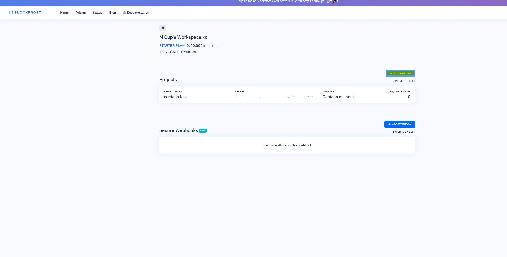
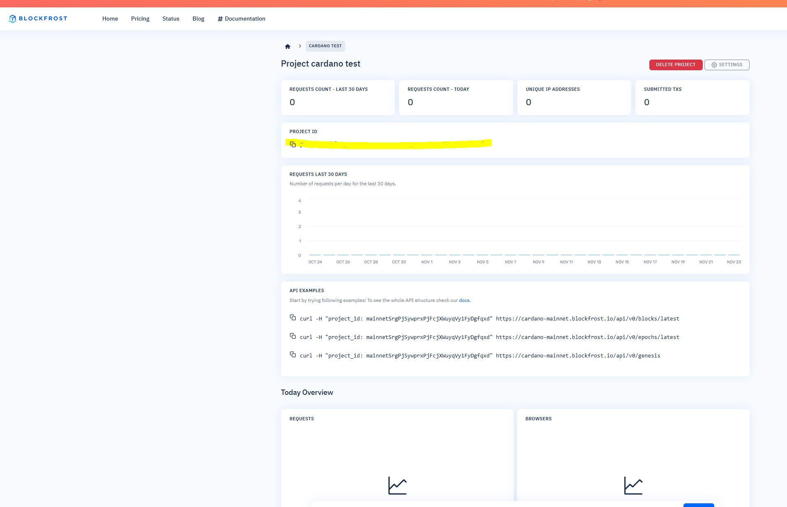

🚀 Cardano 区块链基础概念
Cardano 是一个第三代区块链平台，采用科学方法和研究驱动的方法开发。
了解其核心概念是成为 Cardano 开发者的第一步。
🔬
科学方法驱动
基于同行评审的学术研究，确保技术的可靠性和安全性
🌱
环保共识机制
Ouroboros 权益证明协议，比比特币节能 99%
🏗️
分层架构
分离结算层和计算层，提供更好的可扩展性和灵活性
💡 Python 在 Cardano 生态系统中的角色：
Python 开发者可以通过 PyCardano 库与 Cardano 区块链交互，构建去中心化应用、自动化交易、分析链上数据等。
为什么需要 Blockfrost？
# 直接与 Cardano 节点交互需要：
# 1. 运行完整的 Cardano 节点
# 2. 同步整个区块链数据
# 3. 维护节点软件
# 使用 Blockfrost API：
# 1. 无需运行节点
# 2. 直接调用 REST API
# 3. 免费额度足够开发使用
# 4. 自动处理网络连接和错误
⚙️ Blockfrost 测试网设置教程
学习如何设置 Blockfrost 账户并获取 API 密钥，这是与 Cardano 区块链交互的关键步骤。
2
注册并登录账户
点击右上角的 "Sign Up" 注册新账户，完成邮箱验证后登录

登录后进入 Dashboard，点击 "Add Project" 按钮
3
创建测试网项目
在 Add Project 页面：
- 项目名称：输入任意名称（如 "My Test Project"）
- 网络：选择 Cardano Testnet
- 描述：可选填写项目描述

创建项目后，复制 Project ID（已高亮显示）
4
保存 Project ID
将复制的 Project ID 安全保存，我们将在代码中使用它：
# 你的 Project ID 格式类似：
# testnet1a2b3c4d5e6f7g8h9i0j1k2l3m4n5o6p
💡 重要提示：
- 测试网 Project ID 以
testnet 开头
- 主网 Project ID 以
mainnet 开头
- 免费账户每天有 50,000 次 API 调用额度
- 妥善保管 Project ID，不要提交到公开代码库
💼 完整可运行的钱包监控器代码
这是一个完整的 Cardano 钱包监控器，可以实时监控多个钱包的余额变化和交易历史。
完整的 Python 代码
#!/usr/bin/env python3
"""
Cardano 钱包监控器 - 完整可运行版本
功能：监控钱包余额、查询交易历史、检测余额变化
作者：Cardano Python 教学
"""
import time
import json
import requests
from datetime import datetime
from typing import Dict, List, Optional
class CardanoWalletMonitor:
def __init__(self, blockfrost_project_id: str):
"""
初始化监控器
Args:
blockfrost_project_id: Blockfrost.io 的 project_id
"""
self.project_id = blockfrost_project_id
self.base_url = "https://cardano-testnet.blockfrost.io/api/v0"
self.headers = {
"project_id": self.project_id,
"Content-Type": "application/json"
}
# 测试钱包地址（可以在测试网使用）
self.demo_addresses = [
"addr_test1qqr585tvlc7ylnqvz8pyqwauzrdu0mxag3m7q56grgmgu7sxu2hyfhlkwuxupa9d5085eunq2qywy7hvmvej456flknswgndm3",
"addr_test1qzx9v0z8z7zq7zq7zq7zq7zq7zq7zq7zq7zq7zq7zq7zq7zq7zq7zq7zq7zq7zq7zq7zq7zq7zq7zq7zq7zq7zq7zq7zq7zq7zq7zq7zq7zq7zq"
]
# 监控数据存储
self.wallet_history = {}
print("🚀 Cardano 钱包监控器初始化完成")
def make_api_call(self, endpoint: str) -> Optional[Dict]:
"""调用 Blockfrost API"""
try:
url = f"{self.base_url}/{endpoint}"
response = requests.get(url, headers=self.headers, timeout=10)
if response.status_code == 200:
return response.json()
elif response.status_code == 404:
return None
else:
print(f"❌ API 调用失败: {response.status_code}")
return None
except Exception as e:
print(f"❌ API 调用异常: {e}")
return None
def get_address_info(self, address: str) -> Dict:
"""获取地址详细信息"""
try:
# 获取地址详情
address_info = self.make_api_call(f"addresses/{address}")
if not address_info:
return {"error": "地址不存在或无法访问"}
# 获取地址余额
balance_info = self.make_api_call(f"addresses/{address}/total")
if not balance_info:
return {"error": "无法获取余额信息"}
# 获取交易历史
transactions = self.make_api_call(f"addresses/{address}/transactions?count=3&order=desc")
return {
"address": address,
"balance_ada": balance_info.get("amount", [{}])[0].get("quantity", 0) / 1000000,
"transaction_count": len(transactions) if transactions else 0,
"last_updated": datetime.now().strftime("%H:%M:%S"),
"status": "success"
}
except Exception as e:
return {"address": address, "error": str(e), "status": "error"}
def track_balance_changes(self) -> bool:
"""追踪余额变化"""
changes_detected = False
for address in self.demo_addresses:
current_info = self.get_address_info(address)
if current_info["status"] == "success":
if address in self.wallet_history:
old_balance = self.wallet_history[address]
balance_change = current_info["balance_ada"] - old_balance["balance_ada"]
if abs(balance_change) > 0.000001:
changes_detected = True
direction = "📈 增加" if balance_change > 0 else "📉 减少"
print(f"💰 {address[:20]}... {direction} {abs(balance_change):.6f} ADA")
self.wallet_history[address] = current_info
return changes_detected
def display_wallet_dashboard(self):
"""显示钱包监控面板"""
print("\n" + "="*70)
print("📊 CARDANO 钱包监控面板")
print("="*70)
for address in self.demo_addresses:
info = self.wallet_history.get(address, {})
if info.get("status") == "success":
print(f"\n📍 地址: {address}")
print(f" 💰 余额: {info['balance_ada']:>12.6f} ADA")
print(f" 📄 交易数: {info['transaction_count']:>13} 笔")
print(f" ⏰ 最后更新: {info['last_updated']}")
else:
print(f"\n❌ 地址: {address[:30]}...")
print(f" 错误: {info.get('error', '未知错误')}")
def test_api_connection(self) -> bool:
"""测试 API 连接"""
print("🔍 测试 Blockfrost API 连接...")
try:
response = self.make_api_call("health")
if response:
print("✅ API 连接测试成功!")
return True
else:
print("❌ API 连接测试失败")
return False
except Exception as e:
print(f"❌ API 连接异常: {e}")
return False
def start_monitoring(self, interval: int = 60):
"""开始监控"""
if not self.test_api_connection():
print("❌ 无法启动监控：API 连接失败")
return
print(f"\n🚀 开始监控 Cardano 钱包!")
print(f"⏰ 检查间隔: {interval} 秒")
print("按 Ctrl+C 停止监控")
try:
cycle_count = 0
while True:
cycle_count += 1
timestamp = datetime.now().strftime("%H:%M:%S")
print(f"\n🔄 第 {cycle_count} 次检查 [{timestamp}]")
self.track_balance_changes()
self.display_wallet_dashboard()
print(f"\n⏳ 等待 {interval} 秒后继续...")
time.sleep(interval)
except KeyboardInterrupt:
print("\n\n🛑 监控已停止")
print("谢谢使用! 👋")
def main():
"""主函数"""
print("="*60)
print("🎯 Cardano 钱包监控器")
print("="*60)
# 从用户获取 Blockfrost project_id
project_id = input("\n🔑 请输入你的 Blockfrost project_id: ").strip()
if not project_id:
print("\n❌ 请提供有效的 Blockfrost project_id")
print("\n💡 如何获取 project_id:")
print("1. 访问 https://blockfrost.io/")
print("2. 注册免费账号")
print("3. 进入 Dashboard → Projects")
print("4. 点击 'Add Project'")
print("5. 选择 'Cardano Testnet'")
print("6. 复制 project_id")
return
# 创建监控器实例
monitor = CardanoWalletMonitor(project_id)
# 设置监控间隔
try:
interval = int(input("\n⏰ 请输入监控间隔（秒，默认60）: ") or "60")
except ValueError:
interval = 60
# 开始监控
monitor.start_monitoring(interval=interval)
if __name__ == "__main__":
main()
📝 代码特点：
- 完整的错误处理和异常管理
- 实时余额变化检测
- 友好的控制台输出
- 可配置的监控间隔
- 支持多个钱包同时监控
🛠️ 运行与测试指南
学习如何运行钱包监控器并进行实际测试。
1
安装依赖
只需要安装 requests 库：
pip install requests
2
保存代码文件
将上面的完整代码保存为 cardano_monitor.py
# 在终端中运行：
python cardano_monitor.py
3
输入 Project ID
运行程序后，输入你在 Blockfrost 获取的 Project ID
🔑 请输入你的 Blockfrost project_id: testnet1a2b3c4d5e6f7g8h9i0j
4
开始监控
程序将开始监控钱包余额，输出类似：
🔄 第 1 次检查 [14:30:25]
📊 CARDANO 钱包监控面板
📍 地址: addr_test1qqr585tvlc7ylnqvz8pyqwauzrdu0mxag3m7q56grgmgu7sxu2hyfhlkwuxupa9d5085eunq2qywy7hvmvej456flknswgndm3
💰 余额: 125.456780 ADA
📄 交易数: 15 笔
⏰ 最后更新: 14:30:25
测试余额变化
💡 如何测试余额变化检测：
- 向监控的钱包地址发送测试交易
- 使用 Cardano 测试网水龙头获取测试 ADA
- 程序会自动检测余额变化并显示通知
# 当检测到余额变化时的输出示例：
💰 addr_test1qqr585tvlc7... 📈 增加 10.000000 ADA
🚀 扩展功能与进阶开发
学习如何扩展钱包监控器的功能，构建更复杂的 Cardano 应用。
📧
邮件通知
当检测到重要交易时发送邮件通知
# 添加 SMTP 邮件发送功能
import smtplib
from email.mime.text import MimeText
🤖
Telegram 机器人
集成 Telegram Bot API 发送实时通知
# 使用 python-telegram-bot
import telegram
bot = telegram.Bot(token='YOUR_TOKEN')
📊
数据可视化
使用 matplotlib 绘制余额变化图表
# 生成余额趋势图
import matplotlib.pyplot as plt
plt.plot(balance_history)
plt.show()
Web 界面扩展
from flask import Flask, render_template, jsonify
import threading
app = Flask(__name__)
monitor = None
@app.route('/')
def dashboard():
return render_template('dashboard.html')
@app.route('/api/wallets')
def get_wallets():
return jsonify(monitor.wallet_history)
def start_monitor():
global monitor
monitor = CardanoWalletMonitor("your_project_id")
monitor.start_monitoring()
if __name__ == '__main__':
# 在后台线程启动监控器
monitor_thread = threading.Thread(target=start_monitor)
monitor_thread.daemon = True
monitor_thread.start()
# 启动 Web 服务器
app.run(debug=True, port=5000)
🎯 下一步学习建议：
- 智能合约交互 - 学习与 Plutus 合约交互
- 交易构建 - 构建和发送复杂交易
- NFT 开发 - 创建和交易 Cardano NFT
- DeFi 协议 - 集成去中心化金融协议
🎉 恭喜完成 Cardano Python 开发入门！
你现在已经掌握了使用 Python 与 Cardano 区块链交互的核心技能。
继续探索 Cardano 生态系统的无限可能！